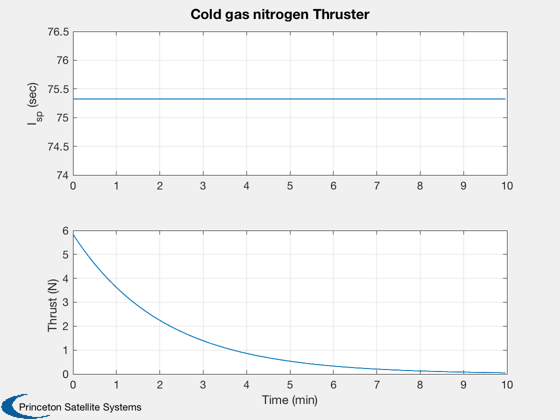

Demonstrate cold gas propulsion
Assumes one thruster that is always on.
See also Plot2D, TimeLabl, Mag, GasProperties, ThrusterColdGas, MolWt2R
%-------------------------------------------------------------------------- % Copyright (c) 2016 Princeton Satellite Systems, Inc. % All rights reserved. %-------------------------------------------------------------------------- % Since version 2017.1 %-------------------------------------------------------------------------- d = ThrusterColdGas; % Default data structure d.on = true; d.u = [1;0;0]; d.r = [0;1;0]; m = GasProperties( d.fuel ); % Molecular weight t0 = 300; % Temperature deg-K p0 = 5000*6895; % Tank pressure, N/m2 mass = 1; % kg v = MolWt2R(m)*t0/p0; % Volume per unit mass d.v = v*mass; n = 300; % Number of time steps g = 9.806; % Acceleration of gravity m/s^2 dT = 2; % sec xP = zeros(2,n); for k = 1:n [force, torque, mDot,uE] = ThrusterColdGas( mass, t0, [0;0;0], d ); mass = mass - dT*mDot; xP(:,k) = [uE/g;Mag(force)]; if( mass <= 0 ) break end end [t,tL] = TimeLabl((0:k-1)*dT); s = sprintf('Cold gas %s Thruster',d.fuel); Plot2D(t,xP(:,1:k),tL,{'I_{sp} (sec)', 'Thrust (N)'},s); %------------------------------------------------------